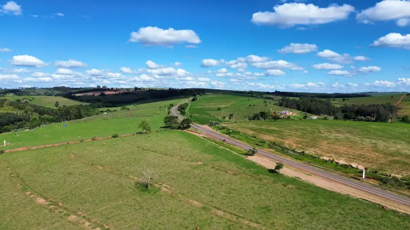
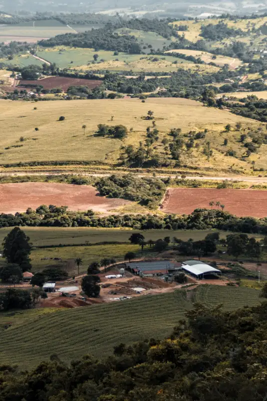
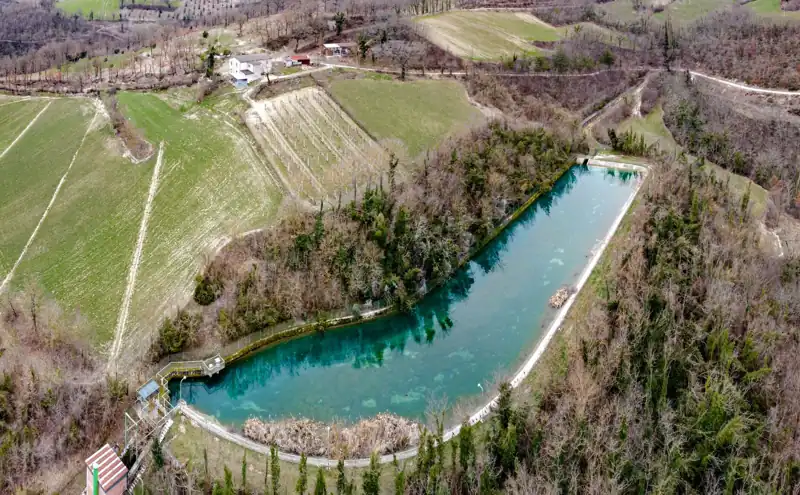

Artigos
Comprar e vender com segurança
Textos curtos, escritos pela equipe com base no que mais aparece nas negociações da região.

Guia rápido
Hectare, alqueire paulista e alqueire mineiro: como converter sem errar
Por que a mesma fazenda aparece com números diferentes, e como comparar preço por alqueire e por hectare.

Checklist
O que analisar antes de comprar uma fazenda
Matrícula, georreferenciamento, CAR, reserva legal, contratos vigentes, água e logística: a ordem certa da análise.

Recursos hídricos
Água e produtividade: o que olhar numa propriedade rural
Nascentes, represas, poços, outorga e irrigação: como a água muda o valor e o risco de uma fazenda.
Ferramenta
Conversor de áreas e preços
Alqueire paulista, alqueire mineiro, hectare, metro quadrado e acre, e preço por alqueire convertido para preço por hectare.
Conversor de áreas
1 alqueire paulista = 2,42 hectares = 24.200 m². Digite a área e escolha a unidade.
Hectares242
Alqueires paulistas100
Alqueires mineiros50
Metros quadrados2.420.000
R$ 250 mil por alqueire = R$ 103 mil por hectare